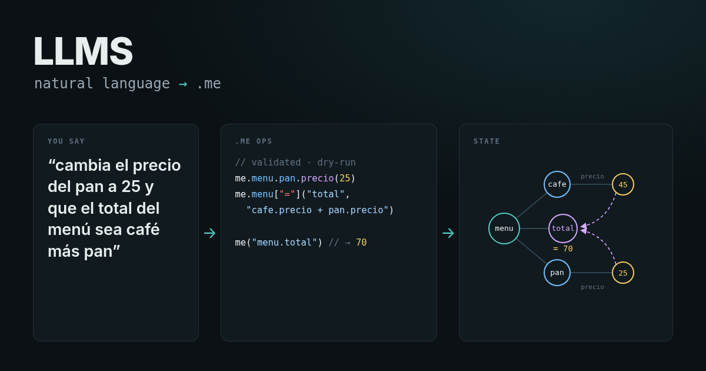

me://.me/LLMS
Docs
LLMS: natural language → .me

Spec
Grammar and ops JSON schema, language-neutral. Prompt, examples and eval live beside them.
Validate
Every op is checked against the schema and the path rules before anything runs.
Dry-run
Ops are applied to a throwaway .me first; you see the diff of what would change.
Confirm
Secrets, noise, deletes and identity always ask. The model never writes secret values.
Adapters
One thin adapter per model, all behind the same interface.
Adapters
∞
Meta · muse-spark-1.3
Built · unit-tested with mocks · eval measured: 24/30 final state, 22/30 exact ops, 30/30 valid (own 30-item ES/EN set, 2026-10-28).
me://LLMS/adapters/meta
◎
OpenAI / Codex
Built · unit-tested with mocks · eval not run yet (no API key).
me://LLMS/adapters/openai